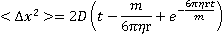

Einstein in 1904
"These motions....belonged to the particle itself."
Robert Brown, 1828
"...bodies of microscopically-visible size suspended in a liquid will perform movements of such magnitude that they can be easily observed..."
Albert Einstein, 1903; [806]
Brownian motion (see diagram below left) is the constant, irregular (apparently random) motion of minute (but visible; < 5 µm) particles suspended in water (or other fluids such as air). These movements are dependent only on the temperature and result from the thermal molecular motions of individual water molecules. There is no distinction between diffusion and Brownian motion, except for the size of the particles. Brownian motion is the collective impact of these (fluid) molecules against the suspended particles that inevitably yields sufficient momentum to create the particles' movements despite the difference in their individual size. This irregular movement is observable down to extremely small time-scales. It has been known at least as far back as Lucretius in about 60 BC. It is named after the botanist Robert Brown who described the phenomenon as inanimate in 1828 despite their vigorous movement that had previously been thought due to 'living' particles. Early in the 20th century, the following conclusions were drawn,

This motion can be regarded as that of a particle that moves with velocity v = x/t (m ˣ s−1), collides every t (s), and comes out of the collision by going forward or backward with equal probability. The mean displacement is zero; <Δx> = <(xt− x0)> = 0, where <> indicates' the mean value of'. The mean squared displacement (i.e., the average of the square of the displacement x in time t, <Δx2>
<Δx2> = <(xt− x0)2>
<Δx2> is proportional to the time elapsed (t) and the diffusivity (the Stokes-Einstein (SE) diffusion coefficient for translational sphere diffusion, D; m2 ˣ s−1); the averaged net displacement (Δx) being proportional to the square root of the elapsed time;
the Einstein-Smoluchowski equation a;
<Δx2> = 2Dt
<Δy2> = 2Dt
<Δz2> = 2Dt
The average particle velocity in any direction is the same as the average velocity in any other direction. The root mean squared velocity is √(<Δx2>) ≡ <Δx2>½. For a 100 kDa protein with mass ~ 1.66 ˣ 10-22 kg, the root mean squared velocity due to thermal energy (at 300 K) is ~ 5 m ˣ s−1 with a net displacement in one second of only ~8 µm. Thus, although the particle moves extremely rapidly, the lmany randomizing collisions that this particle experiences significantly slows down its progress.
Brownian motion
from [4012]
However, the mean velocity (v, m ˣ s−1) diverges as the time (t) approaches zero.
v ≡ √(<Δx2>) /t = (2D/t)½ = 
with D described by the Stokes-Einstein equation for translational diffusion [806],

where D is the diffusivity (m2 ˣ s−1 ), R is the gas constant (J ˣ mol−1 ˣ K−1; kg ˣ m2 ˣ s−2 ˣ K−1 ˣ mol−1), T is the temperature (K), N is the Avogadro constant, η is the dynamic viscosity (Pa ˣ s; kg ˣ m−1 ˣ s−1), r is the averaged (effective) particle radius (m), and t is the time passed (s). The random velocity decreases with increasing particle size. The mean velocity at 25 °C for 0.3 nm, 10 nm, 100 nm, and 1 µm diameter particles are ~50 µm ˣ s−1, 9 µm ˣ s−1, 3 µm ˣ s−1, and 0.9 µm ˣ s−1 respectively.
If correct down to very short times (clearly not so), the apparent velocity ( √(<Δx2>) /t) would be inversely proportional to √t and would grow without limit when this time interval becomes shorter, and therefore this apparent velocity equation is incorrect. Einstein realized that his equation could not determine such velocities as his theory only applies at long time scales. At short time scales, Brownian motion is not entirely random due to the inertia of the particle and the surrounding fluid. Einstein stated that the kinetic energy of a particle is independent of the mass, size, and nature of the particle and independent of the nature of its environment. This kinetic energy (½mv2) is equal to (i.e., determined by) 3⁄2kBT for all particles where kB is the Boltzmann constant and T is the temperature (K);
particle kinetic energy = ½mv2 = 3⁄2kBT
Therefore,
Therefore large particles move slower than small particles.
The motion of a particle through a liquid causes long-lived vortices (a memory effect). These affect the particles' dynamics. The effective mass of a particle in an incompressible liquid is the sum of the mass of the microsphere plus half of the mass of the displaced liquid [3323]. Brownian motion may also produce (thermal) noise in the structure of biomolecules such as proteins, nucleic acids, and water clustering.
Brownian 'bell-shaped' spread
Einstein [2480] also derived the equation for the concentration (φ) at a distance (x) and a time (t) (see right),
from Fick's second law:

That is, the spread of particles after a time period (t) forms a normal distribution with the mean distance from the origin of μ = 0 with a variance (mean square displacement broadening) of
σ2 = 2 ˣ D ˣ t
Einstein [806] argued that the displacement of a Brownian particle is not proportional to the elapsed time but rather to the square root of the elapsed time. Also the distribution flattens (though remaining bell-shaped), and ultimately becomes uniform in the limit when time goes to infinity.
These phenomena can be (at least plausibly) explained in the gas phase by simple collisions. However, such explanation leads to difficulty in ascribing Brownian motion to that resulting from collisions with the water molecules or clusters in a liquid [2480]. Such difficulties in the explanation involve the conservation of energy in the collisions and the distances over which the consequent movement occurs. Einstein seems to have mostly avoided these questions, but he did involve osmotic pressure in the movement of the particles [2480]. The osmotic pressure of the particles certainly seems more likely as the cause of the macroscopic movement of the water and consequent motion of the particles. (see the discussion of the osmotic pressure at surfaces). Also, if the Brownian motion is prevented (for example, at a surface), you get osmotic pressure [2480].
The entropy of a particle depends on the number of configurations associated with it being a distance (d) away from a fixed reference point. The entropic force <f> (resulting from the thermodynamical tendency to increase its entropy) acting on the particle is given as:
<f> = T ˣ (dS/dd) = 2 ˣ kBˣ T/d
<f> is the repulsive force that acts to drive the particle away from the reference point [3323e].
It appears that Brownian diffusion of a particle at an air/liquid interface is subject to an elastic response at the surface [3020]. However, there is a dispute over whether the response is viscous rather than elastic [3020]. Other work has described the diffusion coefficients in the directions parallel and perpendicular to an air/liquid interface. It was found experimentally that there is enhanced Brownian motion in the direction parallel to the surface [3628].
'Brownian motion' should not be confused with 'advection' or 'convection'. Advection is the movement due to the velocity of the fluid. Convection applies to the movement of a fluid due, for example, to thermal gradients. Convection is the usual cause of the spreading of perfume within a room and the spreading of a dye within a solution unless great care is taken to avoid thermal currents.
[Back to Top  ]
]
a The complete relationship is

where D is the diffusivity (m2 ˣ s−1 ), m is the particle mass (kg), η is the dynamic viscosity (Pa ˣ s; kg ˣ m−1 ˣ s−1), and r is the averaged particle radius (m). This reduces to <Δx2> = 2 ˣ D ˣ t at longer time intervals; t ≫ m/(6πηr) [2480]. [Back]
b The instantaneous velocity of a Brownian particle in the air (3-µm diameter silica bead, νrms = 0.422 mm ˣ s−1 at 99.8 kPa, 297 K; cf. νrms of N2 = 475 m ˣ s−1 ) or acetone (3.7-µm diameter barium titanate glass bead; νrms = 0.174 mm ˣ s−1, 291 K, there was too much noise to determine it in water), has been measured more recently using an optical tweezer [3323]. In water, a ten picometer resolution within five nanoseconds is required. It is concluded that, at this limit, the paths of the particles build from short bursts of constant velocity, with this velocity depending on the mass (that includes the inertial mass of the displaced fluid) and temperature. [Back]
c This has caused much discussion over whether it is or is not a perpetual motion machine. The never-ending self-motion is the manifestation of a system’s temperature. This chaotic behavior persists unremittingly as particles cannot cease moving because a temperature of zero Kelvin cannot be achieved (the Third Law of Thermodynamics). [Back]
Home | Site Index | Water activity | Diffusion | Osmotic pressure | LSBU | Top
This page was established in 2016 and last updated by Martin Chaplin on 26 June, 2021